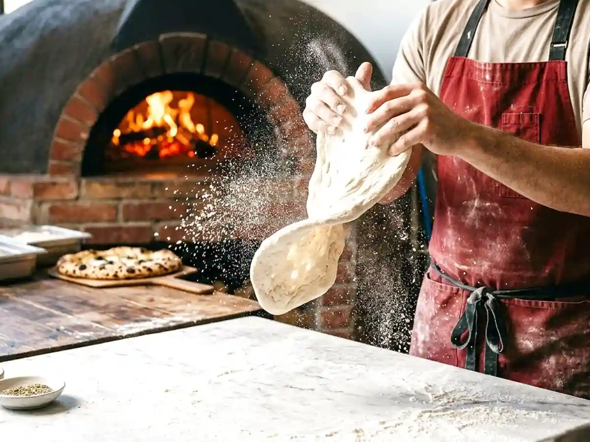
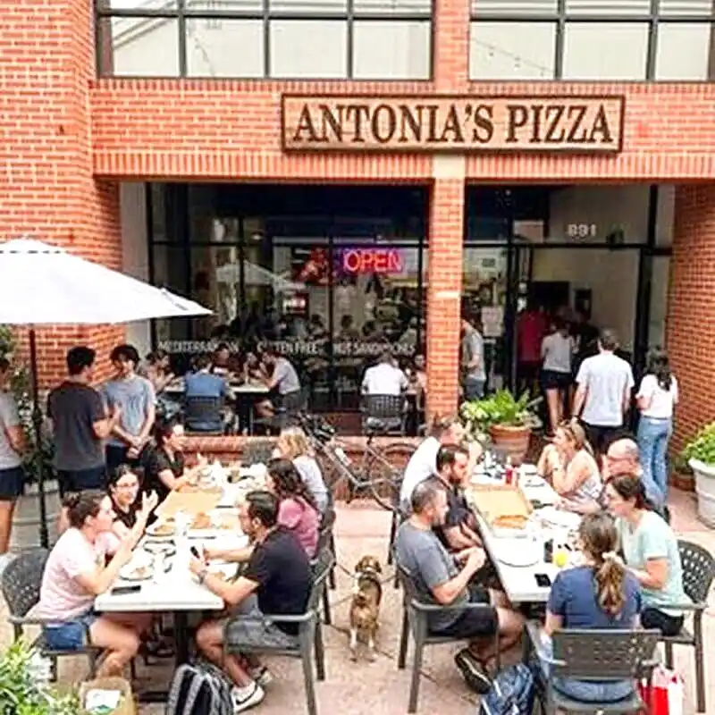
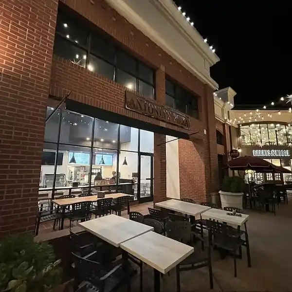
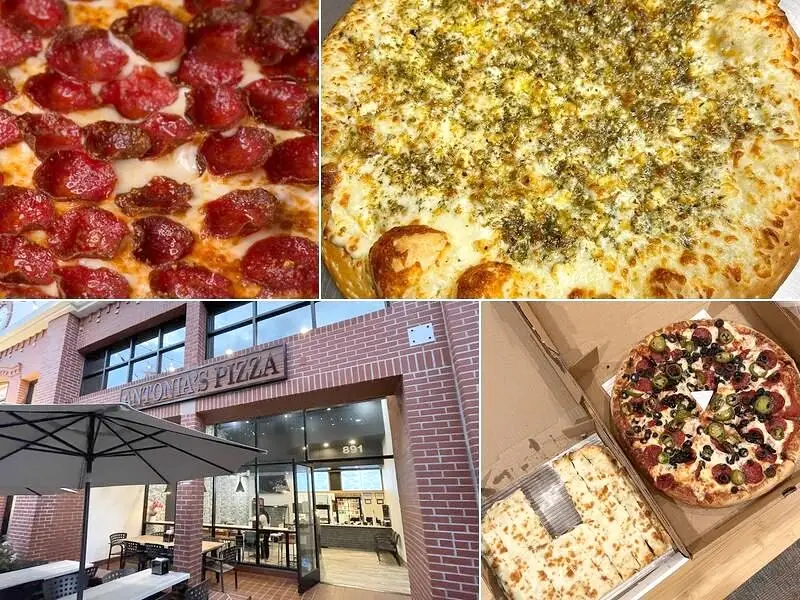
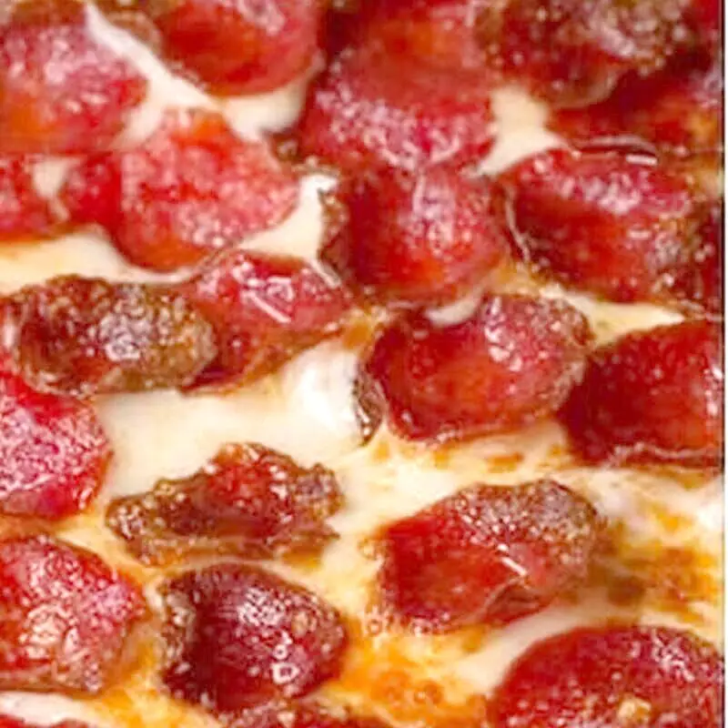
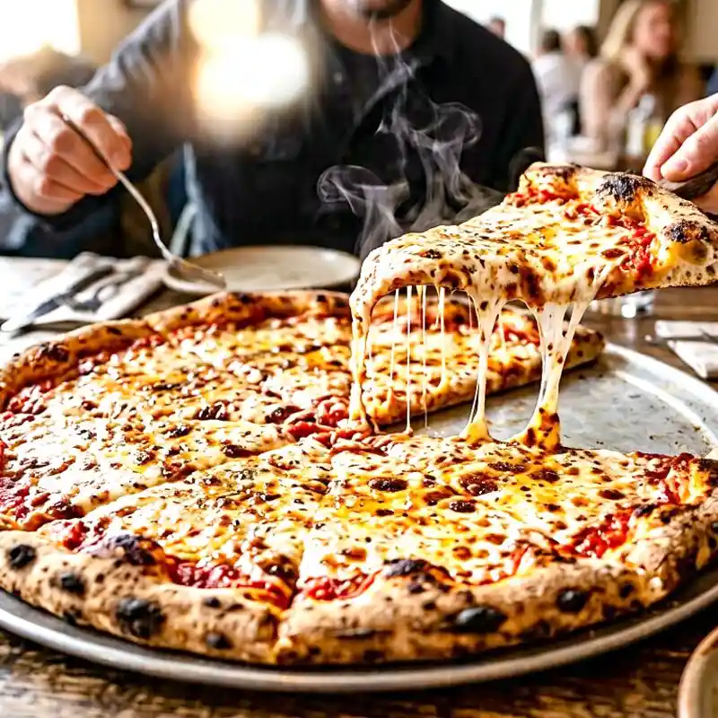
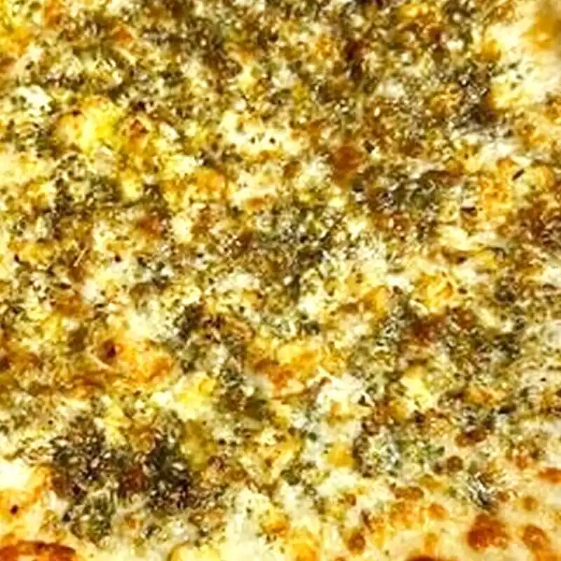
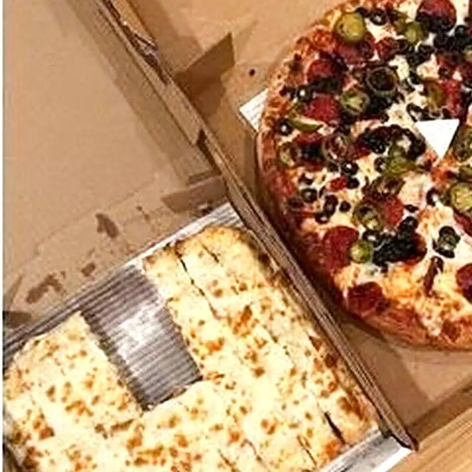

we are famous for our dough — Antonia's Pizza story, San Luis Obispo and Paso Robles
Every pie starts with dough we toss by hand, sauce we make daily, and a crust seasoned SLO-style. No shortcuts, no commissary — just two downtown kitchens that stay open late because SLO does.
Two downtown spots: 891 Higuera St, SLO · 729 12th St, Paso Robles


The dough we're famous for
We mix, proof and hand-toss every ball in-house. The result is airy inside, blistered outside, with that seasoned edge locals call SLO-style. From a 10-inch personal to a 28-inch monster that barely fits the box — same dough, same care.
No frozen pucks, no par-bake. If you come early you’ll see the trays lined up, still cool from the walk-in, waiting for their turn.
Home-made sauce
Tomato, herbs, olive oil — cooked low and ladled by hand. It’s the bright line under the cheese that makes a slice smell like a blanket of oregano when you open the box. Every pie gets it, from cheese to BBQ chicken to pesto.
We don’t hide it under heavy toppings. You should taste it in the first bite and the last crust.
It's not a calzone.
It's the AJARSKI.
A warm, fluffy bread boat loaded with fresh mozzarella, feta, egg and butter — Georgian-inspired and entirely its own thing. You won’t find it anywhere else in SLO.
- Ajarski Original the classic
- Ajarski American all-american
- Ajarski Mexicano with a kick
- Ajarski SLO Style our twist
One legend,
two addresses
San Luis Obispo
891 Higuera St, SLO, CA 93401
Sun–Wed 11 AM–midnight · Thu–Sat 11 AM–2 AM 🌙
(805) 439-2383
Heart of downtown, patio under the brick arcade, late-night headquarters for Cal Poly and downtown workers.
SLO pagePaso Robles
729 12th St, Paso Robles, CA 93446
Sun–Thu 11 AM–midnight · Fri–Sat 11 AM–2 AM 🌙
(805) 238-1851
Downtown Paso, same dough and sauce, in wine country. Patio lit at night.
Paso pageLate night till 2AM
Thu–Sat SLO
Fri–Sat Paso
Students, kitchen crews and night-shift workers know the drill — we stay open when the craving hits.



What we believe

Make it here
Dough, sauce, seasoned crust — made in our kitchens, not trucked in.

Keep it honest
Photos are our real pies. No stock, no fake reviews, no hidden fees.

Feed everyone
10-inch to 28-inch, vegan cheese, gluten-aware options — same line, same care.
Stay open late
Till midnight most nights, till 2AM on weekends. Because SLO doesn’t stop at 9.
Come taste the
dough
Two downtown kitchens, one famous dough — pickup or delivery till late.
Order Online See the Menu